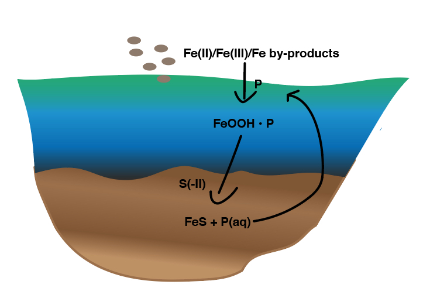

My PhD Journey: Phosphate and Iron in Sediments

What I Worked On
I started my PhD in December 2019 at Utrecht University. The big question I wanted to answer was: what happens to phosphate when iron minerals dissolve in sediments? This matters because people add iron materials to lakes to trap phosphorus and prevent algae blooms, but we didn't really know if it actually stays trapped long-term.
My PhD was part of an EU project called P-TRAP, but honestly, my main focus was just doing good experiments and figuring out how phosphate behaves when conditions change in sediments. I spent most of my time in the lab, working with reactors in oxygen-free conditions - which sounds fancy but mostly meant I became really good at avoiding oxygen contamination!
The Main Things I Investigated
Does phosphate get released when iron minerals dissolve? I set up flow-through reactors to watch what happens when sulfide (which is common in sediments) reacts with iron minerals that have phosphate stuck to them. The short answer: yes, phosphate does get released, but the timing and amount depend on many factors.
Can a mineral called vivianite form and trap phosphate? Vivianite is this beautiful blue-green iron-phosphate mineral. I discovered that it can actually form from iron sulfide (a black mineral called mackinawite) when phosphate is around. This was pretty exciting because it means phosphate can get locked up again even under reducing conditions.
Testing real materials from water treatment plants: Together with my colleague Melanie, we looked at whether iron-rich waste materials from drinking water treatment could actually work for lake restoration. We found that these materials vary a lot - some work well, others not so much.
What I Learned (Beyond Science)
PhD life wasn't just about high-tech equipment. I spent a lot of time figuring out practical things: building auto-samplers, drilling holes in plastic, making gas-tight bags (one student even wanted to use them for beer!), and learning when to use super glue. These skills might not sound directly related to my research, but they were essential for making experiments actually work.
I also learned Mössbauer spectroscopy during a research visit to Bayreuth, Germany (Nov 2021-Jan 2022) with Prof. Stefan Peiffer. That was really valuable for understanding iron mineral transformations.
The Collaboration Side
One of the best parts was working with other PhD students. Melanie and I shared a lot of protocols and had weekly meetings. Victoria from Deltares helped with field work. Ville from Switzerland and I did synchrotron experiments together. It was actually fun to not be doing everything alone.
What I Published
Main paper: Ma, M., Overvest, P., Hijlkema, A., et al. (2023). Phosphate burial in aquatic sediments: Rates and mechanisms of vivianite formation from mackinawite. Chemical Engineering Journal Advances, 16, 100565. Link
Conference Talks & Posters
I presented this work at various conferences - Goldschmidt (Lyon 2023, Prague 2025), some in the Netherlands (NAC), Belgium (IAP), Switzerland, Austria, and others. Each time I presented, I got new ideas and feedback that helped improve the research.
Why This Matters
Lakes around the world have too much phosphorus, which causes algae blooms that kill fish and ruin water quality. Adding iron materials is one way to fix this, but we need to understand if it actually works long-term. My research showed that under some conditions, phosphate can be re-trapped as vivianite, which is good news. But under other conditions, it gets released again. Knowing when and why this happens helps us design better solutions.